Intel Engine · Local Relation Judgment
这份实录不是产品演示视频的文字版。它是一次真实操作的逐步记录：在跑着的系统上录入情报、 补齐约束、加人入册，每一步的界面状态都截了图。包括系统当场拦住我的地方——那些才是它的价值所在。
打开控制台，第一条情报是广联达认购斯维尔 31.2% 股权。右侧「候选度 48」下面写着一句 只决定拷问优先级，不决定行动——这是整个系统的态度：分数高不代表可信， 它只决定你先审哪一条。四个维度里只有「资本关联」命中了关键词，其余三项都标着「缺少明确线索」。
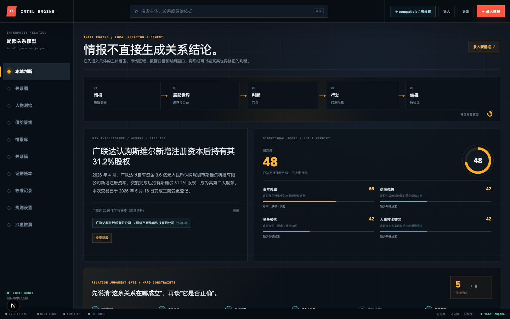
往下滚，是约束门。六个格子——原始证据、本地边界、认识状态、证伪反例、来源时效、专家签署—— 任一不过，整条判断就不能进入执行。它不是打分求和，是六个串联开关。
操作 › 滚动到约束门区域，读取门状态
读到 › 5 / 6 保持拦截，门 5「来源 / 时效」显示为未通过
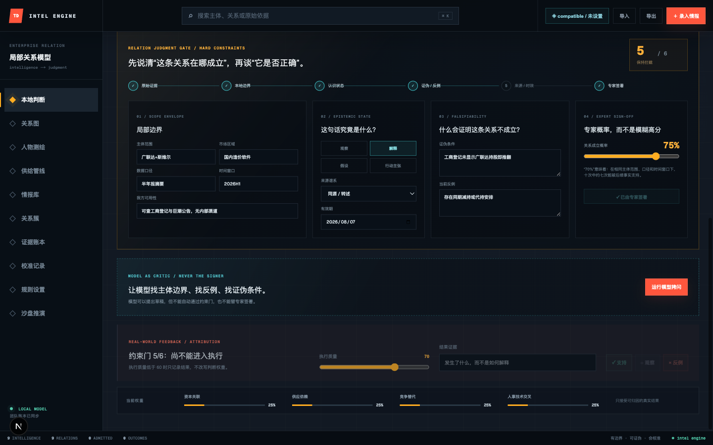
2026-08-07，而今天是 08-08。时效过期，门自动落下——不需要谁去手动撤回。
演示前我查了库：这条记录的 valid_until 就是 2026-08-07，
而系统时间已到 08-08。情报会随时间自己失效，是写进 gateState() 的规则，
不依赖任何人记得来清理。
我把有效期改到 2026-08-20，想让门 5 通过。门 5 确实翻成了 ✓——
但门 6「专家签署」同时从 ✓ 翻回了未签，总数还是 5/6。
这不是 bug。我去查了代码：约束面板里每一个字段的 onChange 都带 signedOff: false。
操作 › 有效期 2026-08-07 → 2026-08-20
门 5 › 未通过 → ✓ 来源 / 时效
门 6 › ✓ 已由专家签署 → 签署这次关系判断（签名被撤销）
总数 › 5 / 6 → 5 / 6（没变）
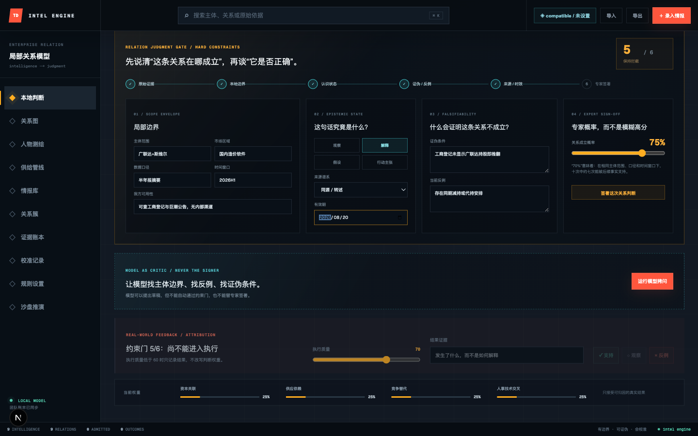
这条设计避免了一种很常见的腐化：三个月前签过的判断，中间悄悄改了口径和时间窗口， 签名却还挂在上面，看起来仍然「已审核」。这里做不到——改任何一个前提，都必须重签。
前五道门都是 ✓ 了，签署按钮才可点。点下去，6/6，允许执行。 注意顶部流程条的第 04 段：从「约束拦截」变成了「允许进入」。
操作 › 点击「签署这次关系判断」
门 › 6 / 6 允许执行
流程条 04 › 约束拦截 → 允许进入
底栏 › 0 ADMITTED → 1 ADMITTED
反馈区标题 › 「约束门 5/6：尚不能进入执行」→「真实结果，支持这次关系判断吗？」
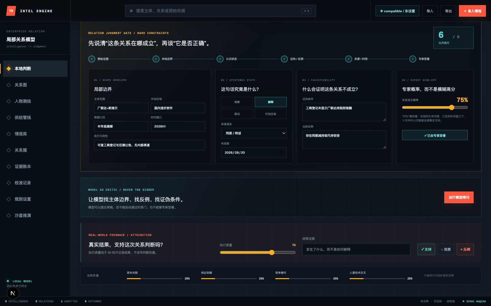
销售真正要问的不是「这两家公司什么关系」，是「我该找谁」。人物测绘只记公开职业事实与我方通路。 我加了三个人，其中两个是刻意设的中文姓名陷阱：李全和李全德是不同的两个人， 而韩小明在名册里带花名「（明哥）」。
录入 › 韩小明（明哥）· 流程与数字化中心 · 总经理 · 通路「峰会晚宴见过一次，未深谈」
录入 › 李全 · 采购部 · 高级经理 · 通路「无」
录入 › 李全德 · 集团 · 副总裁 · 通路「无」
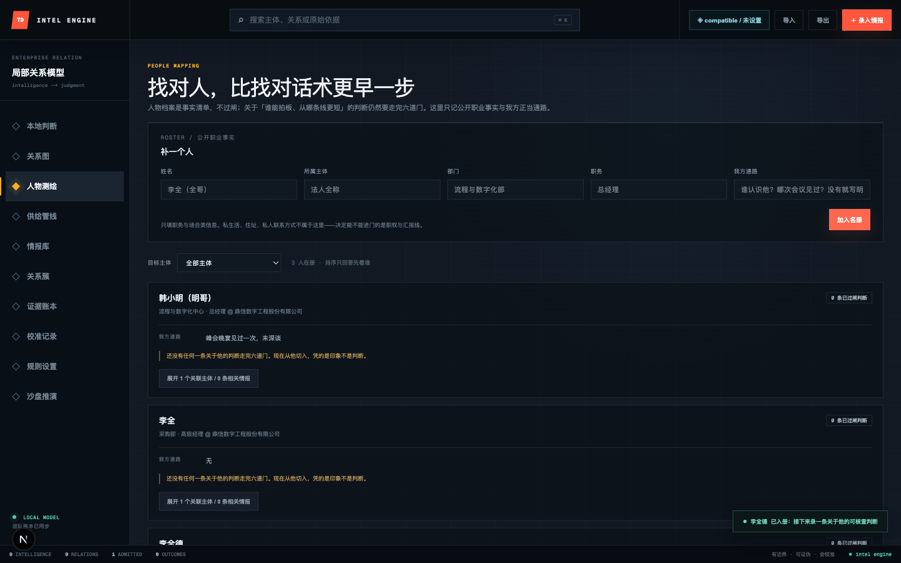
没有过闸判断的人只给中性灰，不给红色警告。他不是一条坏线索，只是还没做功课。 系统区分「这个人有问题」和「我们还没查」——这两件事混在一起，销售就会误读。
语料第六节有条真实感很强的东西：我方销售在峰会晚宴上，从对方采购部一位不愿具名的经理处听到， 工业软件选型的签批权限已上收至韩小明。只有一人口述，无书面材料，本人还强调尚未下发正式文件。 这类消息在真实销售场景里含金量最高，也最容易被当成事实往上报。
操作 › 点击「＋ 录入情报」，填写标题、原始依据、来源、主体 A/B
关系类型 › 人事交叉，方向 A → B 单向
提交后 › 2 / 6 保持拦截，底栏 10 INTELLIGENCE / 10 RELATIONS
提示 › 「情报已入场：下一步补齐主体范围与证伪条件」
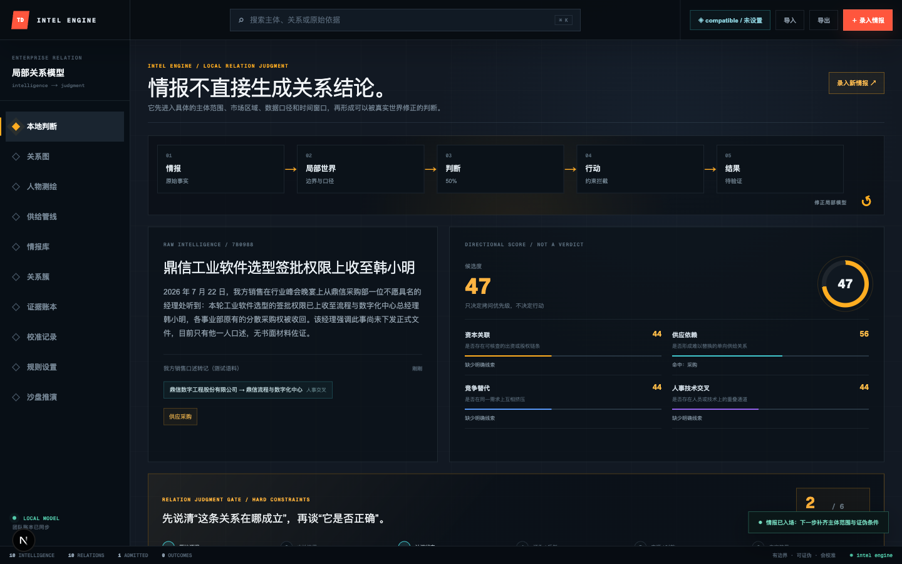
我逐项补齐：局部边界五项、认识状态改「假设」、写证伪条件和当前反例。门数走到 4/6。 然后把来源谱系设为「我方人际渠道」，有效期填 2026-09-30—— 这两项都填了，门 5 依然拦着。
| 动作 | 门数 | 还差什么 |
|---|---|---|
| 补齐局部边界五项（主体范围 / 市场区域 / 数据口径 / 时间窗口 / 我方可用性） | 3 / 6 | 证伪与反例、来源时效、签署 |
| 写证伪条件 + 当前反例（「鼎信下发正式采购权限文件」即推翻） | 4 / 6 | 来源时效、签署 |
| 来源改「我方人际渠道」+ 填有效期 | 4 / 6 | 门 5 仍不过——差人际出处 |
| 补人际出处（谁、什么场合、我方谁在场） | 5 / 6 | 只差专家签署 |
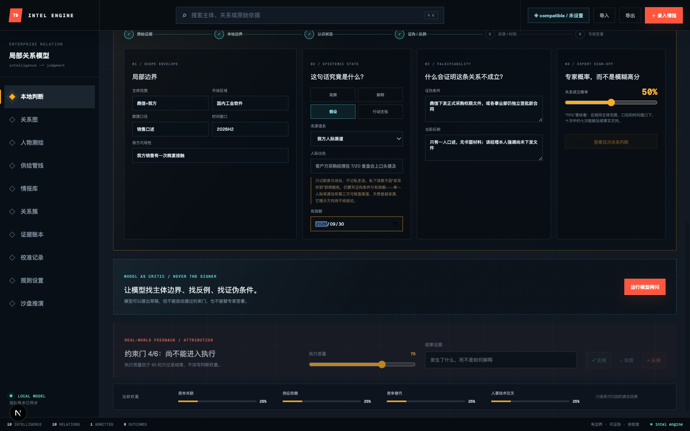
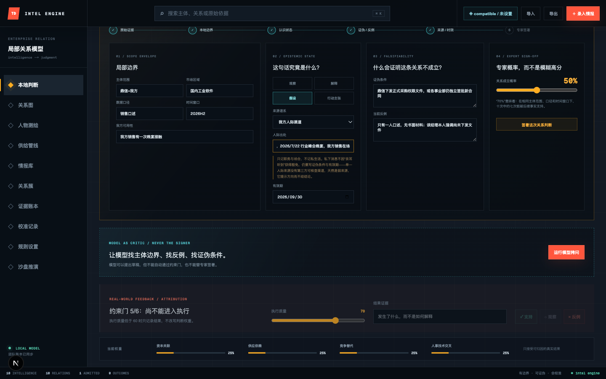
多数系统会给内部消息开后门——「这是我们自己人拿到的，可信度高」。这里反过来：
internal 在门 5 上不但不豁免，还额外要求写清人际出处。
理由很简单：说不出「谁在什么场合说的」的私下消息，连来源谱系都不成立。 私下渠道是最容易变成「我听说」的地方，所以它需要被收得更紧。
门 5/6，签署按钮已经可点。我没有点。 这条消息只有一人口述、无书面材料、当事人自己强调尚未下发文件—— 真实场景下它就该停在执行门外。签署代表专家判断，不该由跑演示的人代签。
情报正文里写的是本名「韩小明」，名册里写的是「韩小明（明哥）」。同时， 正文里完全没提李全和李全德。回到人物测绘看命中结果：
| 人物 | 名册写法 | 情报写法 | 相关情报 | 是否正确 |
|---|---|---|---|---|
| 韩小明 | 韩小明（明哥） | 韩小明 | 1 条 | ✓ 花名不影响命中 |
| 李全 | 李全 | 未提及 | 0 条 | ✓ 没被「李全德」带出来 |
| 李全德 | 李全德 | 未提及 | 0 条 | ✓ 没被「李全」误命中 |
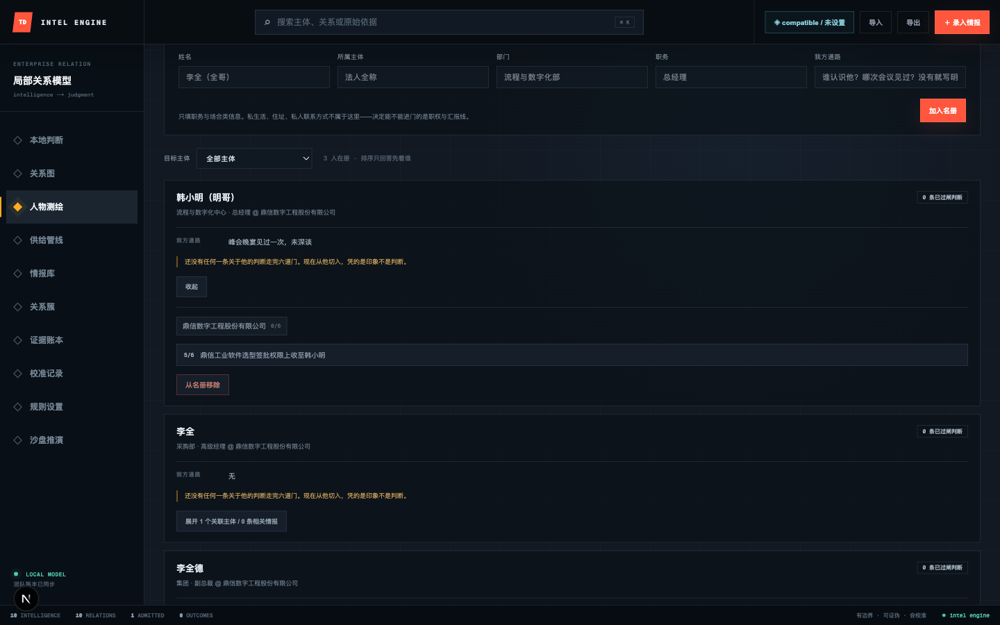
0/6——它来自名册的雇主一栏，是录入时的自述，没有任何情报支撑。
下面那条相关情报标着 5/6，那是真走过门的。
名册里填「他在鼎信当总经理」，这是一句事实声明，不是一条经过核查的关系判断。
所以它记 0/6，而不是伪装成一条已验证的连接。
这两种东西在同一个界面上必须长得不一样，否则销售会把前者当后者用。
13 个主体、10 条关系、1 条已过闸。图上三档颜色一眼可辨—— 青实线是六道门全过，黄虚线是过了 4–5 道，灰虚线是过闸不足。
DOM 校验 › polygon: 14（手绘箭头）marker: 0
颜色分布 › 青 #41c6cc ×1 · 黄 #ffad21 ×1 · 灰 ×12
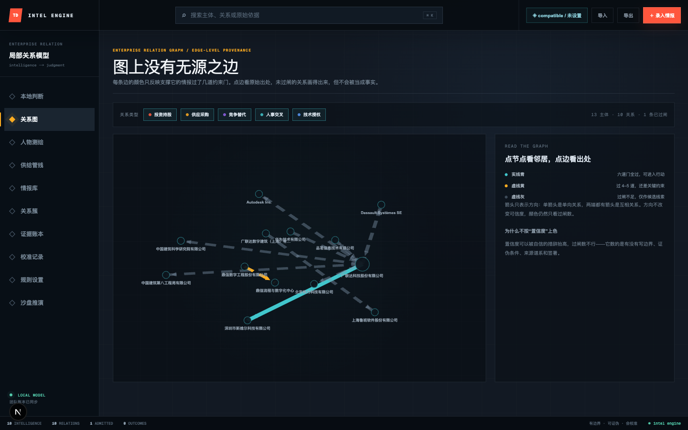
「为什么不按置信度上色：置信度可以被自信的措辞抬高，过闸数不行——它数的是有没有写边界、 证伪条件、来源谱系和签署。」
箭头只表示方向：单箭头是单向关系，两端都有箭头是互相关系。方向不改变可信度，颜色仍只看过闸数。
账本按过闸数排序，每条都并列显示证伪和反例两栏。 十条情报里只有两条写了——就是我这次动过的那两条。其余八条明晃晃标着「缺失」。
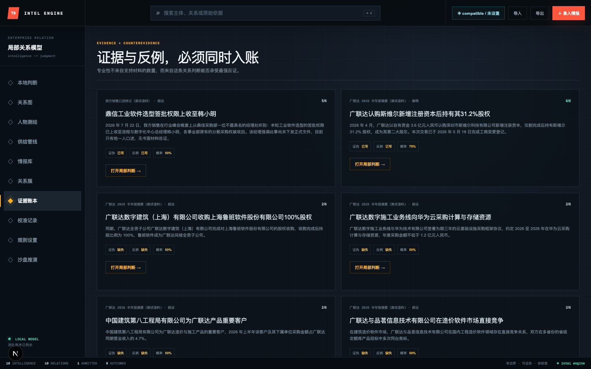
| 情报 | 门 | 证伪 | 反例 | 概率 |
|---|---|---|---|---|
| 广联达认购斯维尔 31.2% 股权 | 6/6 | 已写 | 已写 | 75% |
| 鼎信选型签批权限上收至韩小明 | 5/6 | 已写 | 已写 | 50% |
| 广联达（上海）收购鲁班软件 100% | 2/6 | 缺失 | 缺失 | 50% |
| 广联达向华为云采购算力 | 2/6 | 缺失 | 缺失 | 50% |
| 中建八局为广联达重要客户 | 2/6 | 缺失 | 缺失 | 50% |
| 广联达与品茗在造价软件市场竞争 | 2/6 | 缺失 | 缺失 | 50% |
未经处理的情报默认 50%——系统拒绝替你给出初始倾向。 概率必须由人在写完边界和证伪条件之后手动给，这样「75%」才有意义： 在相同主体范围、口径和时间窗口下，十次中约七次能被后续事实支持。